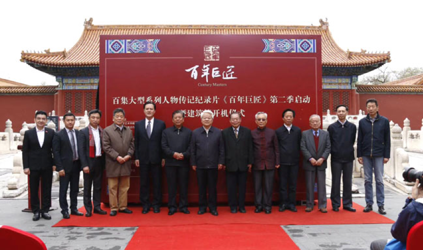
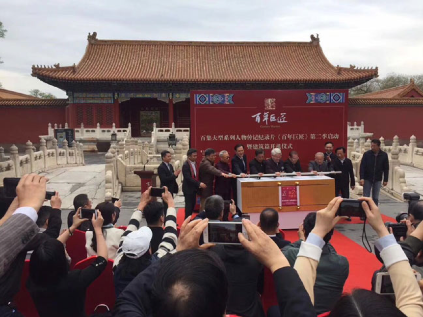

X

作者系文化和旅游部党组成员、故宫博物院院长
故宫，是中国古代建筑艺术的集大成之作，也是世界上最大规模的木结构建筑群和最完整的宫殿建筑群，是几百年前一直到今天的建筑师们跨越时空的一次“集体汇报”，是中华民族集体智慧的体现。今天，故宫博物院成为世界上收藏中国文物藏品最多的博物馆，更是世界上观众最多的博物馆。
2015年，与故宫博物院有深厚渊源的“《百年巨匠》启功先生”的开机仪式在建福宫举行，成为《百年巨匠》书法篇拍摄过程中的标志性节点。2018年4月23日，《百年巨匠》重回紫禁城，在武英殿前举行《百年巨匠—建筑篇》的开机仪式，这是见证《百年巨匠》从文化艺术领域，到全面反映中国近现代文化先行者走上新高度的又一重大标志。《百年巨匠-建筑篇》所表现的四位巨匠大师——詹天佑、茅以升、梁思成、杨廷宝，均与故宫深有渊源。回顾近现代的中国建筑发展历史，在国家兴亡、中西碰撞的关键时刻，继承祖国优秀传统，吸收西方先进科技，建设有中国特色的建筑，建立有中国特色的建筑体系，这四位建筑大师堪为中流砥柱。而故宫作为集中国文化、建筑宏伟范本之大成者，正是他们仰赖且独立，尊古而创新的重要源泉。
詹天佑先生主持修建的京张铁路，不仅使得积贫积弱的中华民族在掌握工业化时代建筑设计施工技术上扬眉吐气，更是把外面的世界与古老的故宫相联结，让工业文明走进中国。
茅以升先生是中国桥梁建筑界的泰斗，土木工程学家、工程教育家，他的学识、经验，化作了对国家的忠诚与热爱。1958年在北京修建人民大会堂时，周恩来总理在审查工程设计时指出：“要有茅以升的签名来保证。”最终茅以升不负所托，为人民大会堂的结构设计作了全面审查核算，并签上了自己的姓名，让故宫才有了“年轻的好邻居”。
梁思成先生是伟大建筑历史学家、建筑教育家和建筑师，他一生传奇的经历，就是中国近现代建筑史最好的脚注，他一步步踏遍穷乡僻壤，一寸寸丈量椽檩梁柱，一笔笔勾描图形法式，他参与设计的作品—人民英雄纪念碑矗立于天安门广场中心，国徽国徽高悬于天安门城楼之上。他在逆境中为保护故宫而奔走呼号，是故宫的守护者。梁思成先生是我的母校清华大学建筑系的奠基者，创始人，我深为有这样一位前辈大师而骄傲自豪。
杨廷宝先生是中国近现代建筑设计开拓者，被誉为“近现代中国建筑第一人”。他留学美国，接受了完整的西方建筑学的教育，但他依然十分注重在实践中向中国传统建筑学习。他主持修缮天坛、雍和宫、中南海紫光阁等9处古建筑之时，虚心向当时中国营造学社的刘敦桢、梁思成等诸先生学习中国传统建筑艺术法则，同时向修缮故宫的老工匠请教，掌握了古建修缮技术；他努力在洋为中用、古为今用中探索自己的道路，形成了真正有中国特色的建筑风格。
故宫在几位建筑大师心目中的重要地位无庸讳言，这里是他们青春年华时期投以钦慕眼光的理想国度和精神归处；岁月消逝，历史更迭，先师们渐渐远去，只有他们伟大的身影和他们留下的建筑依旧散发光彩，见证时代的变迁，铭刻历史的印记。如今我们站在熔铸古今的故宫殿宇之间，感念故宫，感念建筑这人类智慧的结晶带给我们的机缘，向远去的巨匠先贤献上我们的敬意和纪念。
今天，启动《百年巨匠》第二季暨《百年巨匠-建筑篇》的拍摄，进一步在全社会宣传建筑艺术的文化展示功能，弘扬建筑艺术的文化传承价值，展现20世纪中国建筑大师的风采。此时此刻，身处故宫武英殿广场，感慨万千。我认为，我们需要思考和明确，当前用什么行动来纪念这些百年巨匠、建筑前辈，才最为重要。
启动开机仪式会场的北面是故宫武英殿。2002年在这里启动了为时18年的故宫古建筑整体维修保护工程，到2020年，故宫9371间古建筑将经过全面维修保护，保持健康稳定的状态，我们将实现“把壮美的紫禁城完整地交给下一个600年”的目标。我想这是对百年巨匠、建筑前贤们最好的纪念。目前，在武英殿内正在举办张伯驹先生诞辰120周年纪念展。感怀张伯驹先生化私为公，将其所藏大部分精品书画作品，如陆机《平复帖》卷、展子虔《游春图》卷、范仲淹《道服赞》卷等，捐献或转让给国家的感人事迹。
启动开机仪式会场的西面是故宫宝蕴楼。是故宫1200座历史建筑中唯一民国时期建设的大型建筑，建成于1915年，百年之后的2015年，宝蕴楼维修保护后实现开放。由于宝蕴楼维修保护工程中，最大限度地保留了历史信息、没有改变文物原状，同时努力传承传统工艺技术，而获得“全国优秀古迹遗址保护项目”的荣誉。我想这是对百年巨匠、建筑前贤们最好的纪念。
启动开机仪式会场的南面是故宫南大库。这是昔日紫禁城内最大规模的库房，东西长达156米。长期以来，南大库没有得到合理使用，近两年故宫博物院对南大库实施维修保护，下个月将作为故宫博物院家具馆，展示2000余件明清家具，长期对观众开放。实现古建筑合理利用，让收藏在禁宫里的文物、陈列在广阔大地上的遗产都活起来。我想这是对百年巨匠、建筑前贤们最好的纪念。
启动开机仪式会场的东面是故宫断虹桥。紫禁城内最古老的建筑，穿过断虹桥就是18棵300年树龄的大槐树，再向北可以到达慈宁宫、寿康宫、慈宁宫花园所在的西部区域，这些区域过去均树立有“非开放区、观众止步”的牌子，如今成为观众喜爱的开放区。故宫博物院的开放面积由昔日的30%，扩大至今天的80%，让更多的文化遗址，成为人们生活中的文化绿洲。我想这是对百年巨匠、建筑前贤们最好的纪念。
让我们继承中华民族的优秀传统，推动新时代文化事业蓬勃发展，提高国家文化软实力和中华文化对世界的影响力，不负前贤，踏出新时代的足迹，以实际行动和优秀成果纪念百年巨匠、建筑先贤。（单霁翔）
新广电发〔2018〕44号
各省、自治区、直辖市新闻出版广电局，新疆生产建设兵团新闻出版广电局，中央三台、电影频道节目中心、中央新影集团，中国农业电影电视中心，中国教育电视台,国务院国资委办公厅，中央军委政治工作部宣传局：
为深入贯彻落实习近平新时代中国特色社会主义思想和党的十九大精神，鼓励国产纪录片精品创作，加快推动纪录片产业发展，2018年国家新闻出版广电总局将继续开展优秀国产纪录片推荐播映工作，在各地各部门推荐的基础上，每季度评选一批优秀国产纪录片向全国推荐播映。现将有关事项通知如下：
（一）本《通知》所称纪录片是指以自然世界、人类社会为表现对象，以非虚构的真实记录为表现手法，以公开播映为展示渠道的电视片和电影。
（二）凡已经公开播映，记录新时代、展现新风貌，反映中华民族伟大复兴的中国梦，弘扬社会主义核心价值观，传播中华民族优秀传统文化，展示中国革命建设改革历程，讴歌爱国主义精神和时代精神，展现中国优美自然风光，传播科学文化知识，思想内容健康向上、艺术风格独具特色、制作手法精良独到的国产纪录片，不限题材、类型，均可推荐。
（三）参评纪录片推荐单位须拥有参评作品版权；共有版权的片目，须经自行协调，确定唯一推荐单位后，再推荐参评。中外合拍片须在推荐表中注明。
（四）未取得总局颁发的《理论文献影视片播映许可证》的重大理论文献影视片不得推荐。重大理论文献影视片包括：一是涉及党和国家领导人生平、业绩、思想、工作和生活经历的；二是反映、阐释马克思列宁主义、毛泽东思想、中国特色社会主义理论体系以及党的纲领、理论、路线、方针、政策、经验的；三是反映中国共产党历史、中华人民共和国历史和中国人民解放军历史上的重大事件、重要人物、重大决策过程的影视纪录片。
（五）要加强中国梦主题纪录片的创作、播映和推荐工作，鼓励创作并积极推荐展现普通人与国家和时代一起发展成长，追梦、筑梦、圆梦的优秀现实题材纪录片。总局已将中国梦主题纪录片评审纳入季度推优工作，每季度评选一批优秀作品，上传至中国纪录片网（http://www.docuchina.cn），供各播出机构下载播出。各省级广播影视行政管理部门要督促所辖上星频道和纪录片专业频道或栏目，跟踪关注中国纪录片网展播中国梦主题纪录片更新情况，及时下载，安排播出。总局将跟踪检查具体播出情况。
（六）鼓励对外讲好中国故事的国产纪录片参评。参评作品须在海外主流传播平台上播出并取得良好社会反响。
（七）参评纪录片须为普通话配音或加配中文字幕。
（八）访谈类节目、纪实性真人秀不属于推荐对象。
取得各省级广播影视行政管理部门核发《广播电视节目制作经营许可证》的制作机构和省级（含省级）以下广播电视播出机构创作生产的国产纪录片，由各省级广播影视行政管理部门审核后统一向国家新闻出版广电总局推荐；各省级广播影视行政管理部门每季度推荐的国产纪录片原则上不超过10部。
中央和国家有关单位、部队系统所辖制作机构制作的国产纪录片由其上级主管部门审核并负责向国家新闻出版广电总局推荐，各部门每季度推荐的国产纪录片原则上不超过10部。
中央人民广播电台、中央电视台、中国国际广播电台、电影频道节目中心、中央新影集团、中国农业电影电视中心、中国教育电视台，可直接向国家新闻出版广电总局推荐，每季度推荐的国产纪录片原则上不超过10部。
各省级广播影视行政管理部门要注意做好社会制作机构优秀纪录片作品的推荐工作，积极引导鼓励各方力量投入纪录片创作生产和产业发展。
每年对应四个季度分4批推荐。第一批向总局推荐的截止日期为2018年4月10日；第二批截止日期为2018年7月10日；第三批截止日期为2018年10月10日；第四批截止日期为2019年1月10日。
各单位所推荐纪录片的首播时间须在推荐截止时间前两个季度内。如，2018年第一批推荐的作品首播时间须在2017年10月1日至2018年3月31日内，依次类推。
经总局遴选确定的优秀国产纪录片，由总局通过总局政府网站（http://www.sapprft.gov.cn）和中国纪录片网（http://www.docuchina.cn）向社会公布，并发文推荐给全国各级广播影视机构播映。
（一）《优秀国产纪录片季度推优推荐表》（见附件）。
（二）视频文件：格式要求MP4、1920*1080、50M码流，去除片目（包括片花）中的台标、栏目标，节目字幕、片尾字幕可保留。
（三）电子版申报材料：《优秀国产纪录片季度推优推荐表》、竖版海报或者片名截屏，发送至邮箱：media@docucn.com。邮件标题命名规范：总局推优+申报单位+作品名。
（四）其他需要附加说明的材料。
（五）重大理论文献影视片需同时附送总局颁发的《理论文献影视片播映许可证》复印件。
凡总局推荐播映的优秀国产纪录片，尤其是中国梦主题纪录片，全国上星综合频道、纪录片专业频道、科学教育类专业频道，以及全国各级电视台纪录片栏目，应予以优先安排播出。
优秀国产电影纪录片可优先在主流院线和主要影院安排播映。
六、2018年“优秀国产纪录片及创作人才扶持项目”作品、人才，由总局在获得推荐的优秀国产纪录片中组织评选产生，同时可获得相应资金扶持。
七、凡获得总局推荐的优秀国产纪录片，在组织实施有关国际合作和走出去时可优先予以安排。
八、凡获得总局推荐的优秀国产纪录片，由总局安排中国纪录片网（http://www.docuchina.cn）平台向社会推介展播。
九、请各相关单位将本通知精神传达到各纪录片制作和播出机构，总局每季度推优评审前不再另行发文。
特此通知。
国家新闻出版广电总局
2018年3月19日
来源：《央视网》
各省、自治区、直辖市新闻出版广电局，新疆生产建设兵团新闻出版广电局，中央广播电视总台办公厅，电影频道节目中心，中央新影集团，中国农业电影电视中心，中国教育电视台，中央军委政治工作部宣传局，国务院国有资产监督管理委员会办公厅：党的十九大标定了党和国家事业发展新的历史方位，中国特色社会主义进入新时代。新时代凝结着中华民族从站起来、富起来到强起来的伟大奋斗，承载着中国人民追求美好生活的伟大创造，书写着科学社会主义在当代中国的伟大实践。为充分发挥纪录片“国家相册”功能，真实记录奋进的新时代，展现新时代中国人民追求美好生活、实现中华民族伟大复兴中国梦的昂扬之气，国家广播电视总局将实施“记录新时代”纪录片创作传播工程，扶持鼓励带有鲜明时代印记、彰显时代精神的纪录片精品，为新时代新气象新作为留下真实鲜活、生动详实的纪实影像。现将有关事项通知如下：
以习近平新时代中国特色社会主义思想为指导，高举中国特色社会主义伟大旗帜，全面贯彻落实党的十九大精神，紧紧围绕“五位一体”总体布局和“四个全面”战略布局，聚焦中国梦主题，贯彻新发展理念，坚持以人民为中心的创作导向，坚持以社会主义核心价值观为引领，传承中华优秀传统文化，着力表现党领导人民在革命、建设、改革中创造的革命文化和社会主义先进文化，着力表现中国特色社会主义伟大实践，立足当代中国现实，以高度的文化自信构筑中国精神、中国价值、中国力量，引导广大纪录片人把握时代之魂、关注时代之需、聚焦时代之变、引领时代之风，做新时代的记录者。
“记录新时代”纪录片创作传播工程目前规划为2018年到2022年。计划开展编制百部纪录片重点选题规划工作，紧紧围绕未来五年重要时间节点和重大宣传主题，确定100部重点纪录片选题；开展纪录片精品创作，扶持记录新时代、阐释新思想、反映新成就、呈现新气象的优秀纪录片项目；开展中国梦短纪录片创作，每年扶持30名创作思想端正、业务基础扎实、具有较强创新能力的纪录片导演和爱好者，创作30部反映中国人奋斗故事、展现中国人精神风貌的现实题材短纪录片；扩大国产纪录片播出需求，推动优秀国产纪录片播出和宣传推广，积极扩大传播效果和社会影响；实施纪录片人才培养工程，组织纪录片人才培训，着力提升纪录片人创作能力；实施纪录片海外推广计划，加快国产纪录片“走出去”；以“记录新时代”纪录片创作传播工程为载体，推动纪录片产业繁荣发展，增强国产纪录片传播力影响力。
（一）编制“记录新时代”百部纪录片重点选题规划
1.选题要求。围绕纪念改革开放40周年、庆祝中华人民共和国成立70周年、全面建成小康社会、庆祝中国共产党成立100周年等重要时间节点，围绕新时代党和国家发生的历史性变革和取得的历史性成就，围绕普通中国人以奋斗创造美好生活的感人故事开展纪录片选题规划。深刻反映新时代中国改革建设发展的壮阔历程，热情讴歌党、讴歌祖国、讴歌人民、讴歌英雄，站在新的历史起点上，展现新时代新气象新作为，发挥示范引领作用。
2.管理办法。总局根据选题申报情况，统筹协调、综合遴选，确定入选规划的纪录片重点选题，跟踪创作进展，指导创作方向。选题实行动态管理，各单位如有新的重点选题，可随时向总局申报纳入规划。
3.扶持政策。总局将公布纳入选题规划的重点选题名单。各省级广电行政管理部门要做好本省重点纪录片选题创作指导工作，在资金、政策上对列入规划的选题予以重点倾斜和扶持。各级电视台要切实增强媒体阵地意识，关注重点选题，优先选购播出列入规划的重点作品。总局将在国产纪录片季度推优、年度评优等工作中，对列入规划的作品予以优先考虑。
4.申报办法。2018年6月30日前，各单位将“记录新时代”百部纪录片重点选题申报表按要求填好并盖章（见附件1），通过EMS寄送至国家广播电视总局宣传司。如需补报新的重点选题，可按同样办法随时向总局申报。
（二）扶持“记录新时代”纪录片精品创作
为加强国产纪录片精品创作，打造一批思想性、艺术性、观赏性相统一的，站得住、叫得响、传得开、留得下的优秀国产纪录片，组织开展“记录新时代”纪录片精品创作扶持工作。
1.选题要求。围绕纪念改革开放40周年、庆祝中华人民共和国成立70周年、全面建成小康社会、庆祝中国共产党成立100周年等重要时间节点，创作反映中国革命历史，反映国家重大发展战略，反映经济、政治、文化、社会、生态文明建设发展新成就，反映全面建成小康社会、全面深化改革、全面依法治国、全面从严治党新征程，反映扶贫攻坚伟大历程和成就，反映普通中国人以奋斗创造美好生活的作品。
2.管理办法。总局组织专家对申报的选题进行评审论证，每年确定20部左右有潜力的选题，予以资金扶持。总局将与责任单位签订项目责任书，定期督查进度，加强创作指导，确保作品质量。
3.扶持政策。总局投入资金扶持“记录新时代”纪录片精品创作。各省级广电行政管理部门要切实做好本省纪录片精品项目的创作指导工作，协调配置资源，加强管理和服务保障，对精品项目予以重点倾斜和扶持。鼓励制作方通过市场融资。总局将在国产纪录片季度推优、年度评优等工作中，对精品项目予以优先考虑，并组织宣传、推介、展播。
4.申报办法。2018年到2022年，每年6月30日前，各单位将“记录新时代”纪录片精品项目申报表按要求填好并盖章（见附件2），通过EMS寄送至国家广播电视总局宣传司。
（三）扶持“记录新时代”中国梦短纪录片创作
为动员、引导广大纪录片人投身火热时代、投身火热生活，拍摄更多、更好的现实题材作品，充分反映新时代中国人民追求美好生活、实现民族复兴的昂扬之气，组织开展“记录新时代”中国梦短纪录片创作扶持工作。
1.选题要求。紧紧围绕奋斗创造美好生活的主题，把“奋斗的人民”和“人民的奋斗”作为新时代纪录片创作的重要内容，讲好普通人的奋斗故事，塑造新时代奋斗者群像，传递“千千万万普通人最伟大”“幸福都是奋斗出来的”“奋斗本身就是一种幸福”等价值观念，弘扬中国人民的伟大创造精神、伟大奋斗精神、伟大团结精神、伟大梦想精神。
2.管理办法。总局组织专家对申报的选题进行评审论证，每年确定30部有潜力的选题，列入扶持项目，予以资金扶持，并指导推进创作播出。
3.扶持政策。总局投入资金扶持“记录新时代”中国梦短纪录片拍摄制作。鼓励制作方通过市场融资。同时将在国产纪录片季度推优、年度评优等工作中，对纳入扶持项目的好作品予以优先考虑，并组织开展“记录新时代”中国梦短纪录片展播工作。
4.申报办法。2018年到2022年，每年6月30日前，各级电视台、纪录片制作机构等可登录注册中国纪录片网填写项目申报信息（见附件3），申报的选题应为30分钟以内。申报窗口：中国纪录片网（www.docuchina.cn）首页“记录新时代”中国梦短纪录片项目申报入口。网上申报完成后，申报单位需将申报表打印出来并由所在省（自治区、直辖市）新闻出版广电局签署意见并盖章，通过EMS寄送至国家广播电视总局宣传司。
（四）扩大国产纪录片播出需求
调整现有电视上星综合频道播出纪录片相关规定，将2011年《关于进一步加强电视上星综合频道节目管理的意见》中“电视上星综合频道平均每天6:00至次日1:00之间至少播出30分钟国产纪录片”的规定后增加“每个电视上星综合频道全年在19:30-22:30时段播出国产纪录片总量不得低于7小时。”支持和鼓励地方电视台上星频道和地面频道开设纪录片栏目，扩大国产纪录片播出需求。
（五）实施纪录片人才培养工程
切实加强纪录片人才队伍建设，建立健全相关人才培养、发现、使用和激励机制，建立纪录片人才库，开展纪录片专业培训和国际交流。启动纪录片青年导演培训计划，充分发挥行业协会和高校科研机构的作用，加强对青年纪录片创作人员的正面引导。实施纪录片领军人物培训计划，组织遴选优秀创作人才到国外学习先进的纪录片制作经营经验，开展纪录片观摩、交流、研讨活动，重点培养纪录片策划创作人才、摄制人才、经营管理人才等，特别要着力培养既懂创作生产又懂市场运营的复合型人才。
（六）实施纪录片海外推广计划
鼓励扶持讲好中国故事的中外合拍纪录片，与境外主流纪录片制作播出机构合拍的纪录片，视同国产纪录片给予相应政策扶持。加大对纪录片“走出去”的支持力度，对在国际主流媒体播出的优秀国产纪录片予以重点扶持。扶持指导办好国内纪录片节展活动，支持优秀国产纪录片和制作机构参加境外高水平影视节展。
一是加强组织领导。各省（自治区、直辖市）新闻出版广电局要加强对工程实施的组织领导，及时将本通知精神传达到所辖有关单位。要切实提高服务意识，积极组织所辖区域内有关机构、人才申报有关项目，加强对本省入选项目的跟踪指导和配套扶持，积极推动项目实施，统筹解决项目实施过程中的问题，做到指导到位、管理到位、服务到位。
二是完善扶持保障。各省（自治区、直辖市）新闻出版广电局要出台相应政策，合理调配资金，加大对有关项目和人才的政策、资金扶持力度。要统筹利用中央和地方设立的文艺创作专项资金或基金，发挥财政资金引导作用，调动创作生产单位积极性，鼓励引导社会资金参与创作生产。
三是积极宣传推介。要创新宣传方式，利用多种载体、结合作品特点开展推介展示、展映展播等活动，推动优秀纪录片进企业、进农村、进机关、进校园、进社区、进军营展播，注重与新媒体融合，扩大覆盖面，增强影响力。
特此通知。